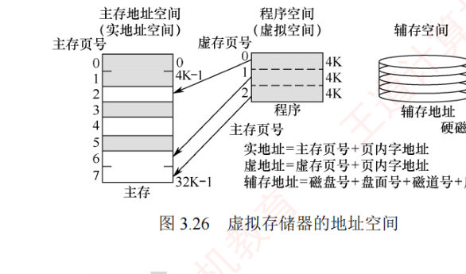
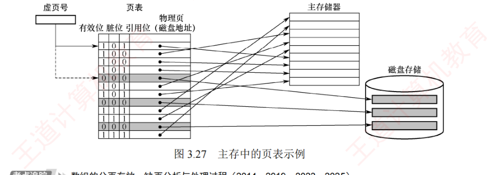
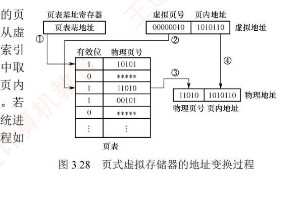
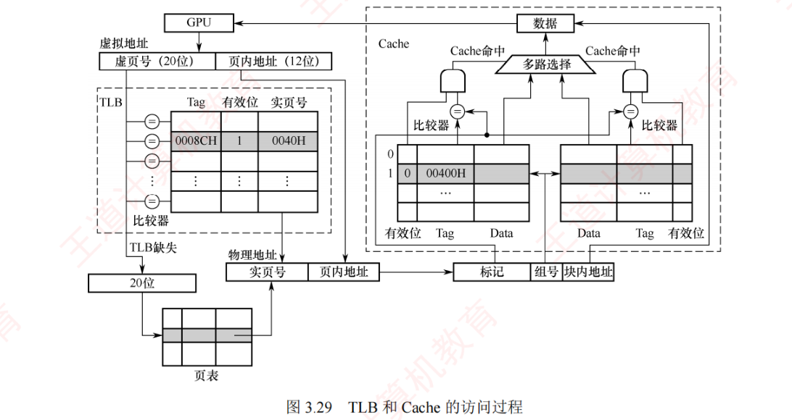
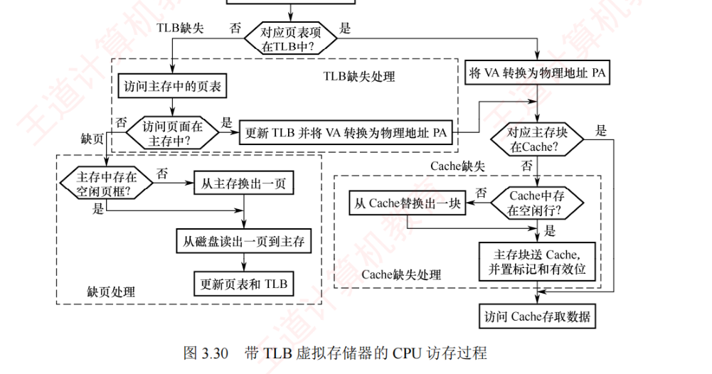
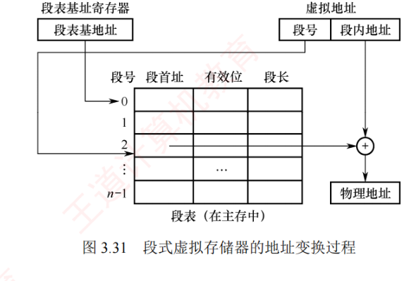

3.6 虚拟存储器
虚拟存储器是一种由硬件与系统软件协同实现的存储管理机制，它用主存和辅存（如磁盘）构建一个容量巨大的逻辑地址空间。对应用程序员而言，该机制是透明的：程序可按虚拟地址空间编写，无须关心实际主存容量或程序在主存中的物理位置。本节覆盖考纲全部四条：基本概念（3.6.1）、页式（3.6.2，含页表、地址转换、TLB）、段式（3.6.3）、段页式（3.6.4），最后是与 Cache 的比较（3.6.5）。
3.6.1虚拟存储器的基本概念
虚拟存储器将程序的地址空间（称为虚拟地址空间或逻辑地址空间）与主存的物理地址空间分离：用户程序使用的地址称为虚地址（或逻辑地址），实际主存单元的地址称为实地址（或物理地址）。通常，虚地址空间远大于实地址空间（见图 3.26）。

当 CPU 使用虚地址访存时，系统首先判断该虚地址对应的数据是否已调入主存：若已调入，则通过地址变换机制将其转换为实地址，CPU 即可直接访问对应的物理单元；若未调入，则触发缺页（或缺段）异常，由操作系统将该页（或缺段）从辅存调入主存，之后 CPU 再进行访问；若主存已满，则需根据替换算法选择一个页面进行替换。
3.6.2页式虚拟存储器
页式虚拟存储器以页为基本单位，主存空间和虚拟地址空间均被划分为大小相同的页：主存中的页称为物理页（或实页、页框），虚拟地址空间中的页称为虚拟页（或虚页）。页表记录了每个虚页在主存中的映射位置，通常常驻主存。
1. 页表
图 3.27 是一个页表示例。页表项中的主要控制字段如下：
- 有效位（也称装入位）：表示对应虚页是否已调入主存。若为 1，表示该页已在主存，页表项中存放其物理页号；若为 0，表示未调入，页表项通常存放该页在外存（如磁盘）中的地址；
- 脏位（也称修改位）：表示页面是否被修改过。在采用回写策略的虚拟存储器中，替换页面时根据脏位决定是否将其写回磁盘；
- 引用位（也称使用位）：记录页面是否被访问过，主要用于实现基于使用频率的页面替换算法（如 Clock 或 LRU 算法）。

页式虚拟存储器的优点：页大小固定、页面固定，调入操作方便。缺点：程序大小通常不是页的整数倍，导致最后一页产生内部碎片；此外页是物理划分单位、缺乏逻辑意义，因此在程序模块化、保护和共享方面不如段式虚拟存储器灵活。
2. 地址转换
程序生成的地址为虚拟地址，CPU 执行指令时必须先将其转换为物理地址，才能访问主存中的指令或数据。虚拟地址分为两部分：高位为虚页号，低位为页内偏移；物理地址同样分为高位物理页号和低位页内偏移。由于页大小相同，两部分的页内偏移完全一致。虚拟地址到物理地址的转换通过页表实现——页表是一张存放在主存中的「虚页号 → 物理页号」映射表。

算一算（照图 3.28 的示例）：虚拟地址中虚页号为 00000010、页内地址为 11011010；以虚页号 00000010（第 2 项）为索引查页表，命中有效位为 1 的表项，取出物理页号 11010，与页内地址 11011010 拼接，得到物理地址 11010 11011010。注意：页内偏移原封不动地拼在物理页号后面，变的只是页号。
3. 快表（TLB）
由于地址转换过程必须访问主存中的页表以获取物理页号，再访问主存取得实际数据，因此采用虚拟存储机制后平均访存次数增加，性能下降。根据程序访问的局部性原理，在一段时间内 CPU 往往集中访问少数页面，若将这些页面对应的页表项缓存至由高速 SRAM 构成的快表（TLB）中，则可在地址转换时避免每次都访问主存中的页表，从而显著提升效率。相应地，主存中的页表被称为慢表（Page）。
TLB 的工作原理类似于 Cache，通常采用全相联或组相联映射。TLB 表项包含虚页号（作为标记）和对应的物理页号及控制位（如有效位、脏位等）：在全相联映射下，TLB 标记即为完整的虚页号；在组相联映射下，虚页号的高位作为标记，低位作为组索引。
4. 具有 TLB 和 Cache 的多级存储系统
图 3.29 为一个具有 TLB 和 Cache 的多级存储系统，其中 Cache 采用 2 路组相联映射方式，CPU 给出一个 32 位的虚拟地址，TLB 采用全相联结构、每项均配置一个比较器。地址转换时，将虚拟地址中的虚页号与所有 TLB 项的标记字段并行比较：若某一项匹配且有效位为 1，则 TLB 命中，直接从中取得物理页号，完成地址转换；若 TLB 未命中，则需访问主存中的页表（慢表）以获取对应的页表项，完成地址转换并将其装入 TLB（若 TLB 已满，则需按替换算法处理）。
获得物理地址后，Cache 根据映射方式将其划分为标记、组号和块内地址三个字段：首先利用组号定位对应的 Cache 组，再将该组中各 Cache 行的标记与物理地址的标记进行比较：若某一行匹配且有效位为 1，则 Cache 命中，根据块内地址读出对应的数据送至 CPU。

通过 TLB 缓存频繁访问的页表项，系统避免了每次地址转换都访问主存页表，从而在引入虚拟存储器的同时，几乎不降低访存性能。
5. TLB、Page、Cache 三种缺失的组合分析
CPU 一次访存操作可能涉及 TLB、页表、Cache、主存和磁盘的访问，访问过程如图 3.30 所示。可见，CPU 访存过程中存在三种缺失情况：
- TLB 缺失：要访问的虚页号不在 TLB 中；
- Cache 缺失：要访问的主存块不在 Cache 中；
- Page 缺失：要访问的页面不在主存中。
TLB 是页表项的缓存，因此 Page 缺失时 TLB 也必然缺失；同理，Cache 是主存的副本，因此 Page 缺失时 Cache 中也不可能有对应的数据。这三种缺失的组合情况见表 3.3。

| 序号 | TLB | Page | Cache | 说明 |
|---|---|---|---|---|
| 1 | 命中 | 命中 | 命中 | TLB 命中则 Page 一定命中，信息在主存，也可能在 Cache 中 |
| 2 | 命中 | 命中 | 缺失 | TLB 命中则 Page 一定命中，信息在主存，也可能不在 Cache 中 |
| 3 | 缺失 | 命中 | 命中 | TLB 缺失但 Page 可能命中，信息在主存，也可能在 Cache 中 |
| 4 | 缺失 | 命中 | 缺失 | TLB 缺失但 Page 可能命中，信息在主存，也可能不在 Cache 中 |
| 5 | 缺失 | 缺失 | 缺失 | TLB 缺失且 Page 缺失，信息不在主存，也一定不在 Cache 中 |
注：组合表已剔除逻辑上不可能的情形（如 TLB 命中而 Page 缺失、Page 缺失而 Cache 命中等）。
各种组合的访存开销：最好的情况是第 1 种组合，此时无须访问主存；第 2 种和第 3 种组合需要访问一次主存；第 4 种组合需要访问两次主存；第 5 种组合会发生「缺页异常」，需要访问磁盘，并至少访问两次主存。Cache 缺失处理由硬件自动完成；缺页处理由操作系统通过「缺页异常处理程序」实现，具体步骤包括调入所需页面、更新页表等；TLB 缺失既可用硬件处理，也可用软件处理。
3.6.3段式虚拟存储器
段式虚拟存储器中的段按程序的逻辑结构划分，各个段的长度因程序而异。虚拟地址分为两部分：段号和段内地址。虚拟地址到物理地址的变换由段表实现。段表是程序的逻辑段与主存中存放位置的对照表，每行记录段号对应的有效位、段起点和段长等信息——由于段的长度可变，段表中必须给出各段的起始地址与段长。
CPU 根据虚拟地址访存时：首先从虚拟地址中提取段号，并根据段表基地址找到对应的段表项；然后检查该表项的有效位——若为 1，表示该段已调入主存，若为 0，表示该段不在主存中；当段表已调入主存时，从段表中读出该段在主存中的起始地址，与段内地址相加，得到对应的物理地址。段式虚拟存储器的地址变换过程如图 3.31 所示。

段式虚拟存储器的优点：段的边界与程序的天然逻辑模块一致，具有良好的逻辑独立性，便于程序的编译、管理、修改和保护，也易于实现多道程序间的共享。缺点：段长度可变，主存分配困难，段间容易产生外部碎片，难以有效利用，造成存储空间浪费。
3.6.4段页式虚拟存储器
段页式虚拟存储器中，程序先按逻辑结构分段，每段再划分为固定大小的页，主存空间也划分为大小相等的页；程序对主存的调入和调出以页为基本交换单位；每个程序对应一个段表，每段对应一个页表。虚拟地址由段号、段内页号和页内地址三部分组成。CPU 根据虚拟地址访存时：首先用段号查段表，获得该段对应页表的起始地址；接着以段内页号为索引访问页表，取出实页号；最后将实页号与页内地址拼接，形成物理地址。
段页式虚拟存储器的优点是兼顾页式和段式的长处：既支持按段进行共享和保护，又避免了段式外部碎片问题。缺点是地址变换过程中需要两次查表（先查段表、再查页表），系统开销较大。
3.6.5虚拟存储器与 Cache 的比较
虚拟存储器与 Cache 既有相同之处，又有不同之处。
1. 相同之处
- 最终目标都是提高系统性能，两者都体现了容量、速度、价格的梯度；
- 都把数据划分为小信息块作为基本的交换单位（虚拟存储器的页通常比 Cache 块大得多）；
- 都涉及地址映射、替换算法和更新策略等问题；
- 都基于局部性原理，采用「快速缓存」思想，将活跃数据放在高速部件中。
2. 不同之处
- Cache 主要解决 CPU 与主存之间的速度差异，而虚拟存储器是为了解决主存容量；
- Cache 完全由硬件实现，对所有程序员透明；虚拟存储器由操作系统和硬件共同实现，对应用程序员透明，但其管理机制对操作系统开发者不透明；
- 不命中时的性能影响不同：Cache 不命中需再访主存，延迟增加数十倍；而虚拟存储系统缺页需访问磁盘，延迟增加十万倍，对系统性能影响更严重；
- CPU 可直接访问 Cache 和主存，Cache 不命中时硬件自动从主存取数据并装入 Cache；CPU无法直接访问辅存，缺页时必须先将数据从辅存调入主存，之后 CPU 才能访问。